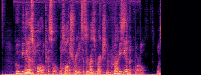
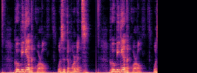
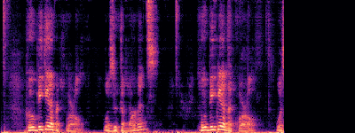
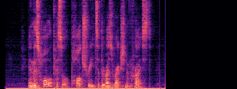
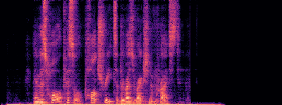
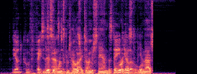
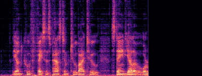
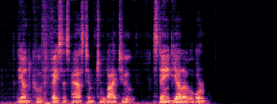
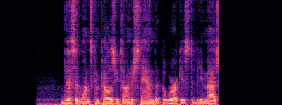
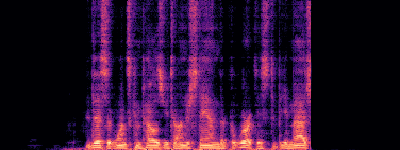

All examples below demonstrate the separation of two overlapping speakers from a single-channel mixture. Please use headphones for the best experience.
| Sample ID | Mixture (Input) | Clean Sources (Ground Truth) | SEAL Separation (Output) |
|---|---|---|---|
| Example 1 (Test Sample 1) |
 |
Source 1:  |
SEAL Source 1:  |
| Source 2:  |
SEAL Source 2:  |
||
| Example 2 (Test Sample 2) |
 |
Source 1:  |
SEAL Source 1:  |
| Source 2:  |
SEAL Source 2:  |